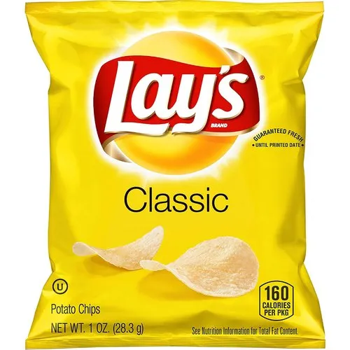

Course assignment — image and description on one page.
The Lays chips packaging uses strong color contrast, especially the bright yellow background, to immediately attract attention. The logo is large and centered, creating a clear visual hierarchy that guides the viewer’s eye first to the brand and then to the flavor and imagery. Typography is bold and simple, allowing information to be read quickly.
Gestalt principles such as figure-ground are used to separate the logo and chips imagery from the background. Proximity groups related elements together, such as the logo, flavor name, and product image, making the design easy to understand at a glance. Similar colors and fonts create unity and balance across the package.
The design appeals to appetite, familiarity, and convenience. The bright colors and realistic imagery of chips trigger cravings, while the recognizable logo builds trust. Overall, the packaging is designed to persuade consumers to quickly recognize the product and choose it when purchasing snacks.